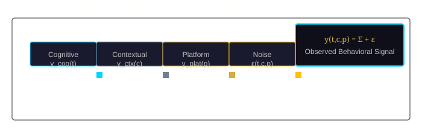
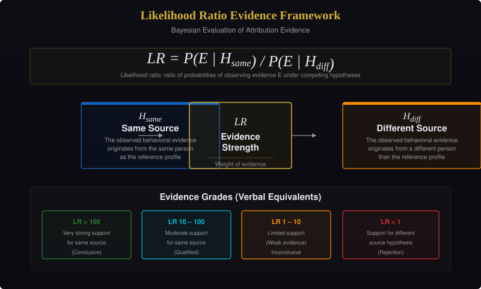

Mathematical Foundations
Framework Structure
The mathematical framework comprises 292 objects across 24 categories, governed by six foundational principles.
| Layer | Categories | Objects |
|---|---|---|
| 1 — Foundation Types | Data types, sets, constants | 39 |
| 2 — Structured Types | Vectors, matrices, tensors | 26 |
| 3 — Transformations | Functions, normalizations, aggregations | 31 |
| 4 — Comparison & Evaluation | Metrics, distances, similarities | 26 |
| 5 — Uncertainty & Decision | Probabilities, confidences, scores | 32 |
| 6 — Constraint & Optimization | Constraints, objectives | 15 |
Behavioral Signal Model

The observed behavioral signal from source s at time t on platform p in context c is modeled as:
y(t, c, p) = y_cog(t) + y_ctx(c) + y_plat(p) + ε(t, c, p)
Likelihood Ratio Framework

Evidence evaluation follows the likelihood ratio framework established in forensic science.